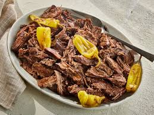

Mississippi Roast

Description
A mississippi roast is a delicious, tender, and flavorful pot roast dish that's made with a few simple ingredients. It's typically made by slow-cooking beef roast (usually a chuck roast) with ranch dressing mix, au jus gravy mix, butter, and pepperoni peppers. The result is a melt-in-your-mouth roast with a tangy and savory flavor, with a slight kick from the peppers.
Ingredients
- 1 (4 pound) beef chuck roast
- 1/4 cup of butter
- 5 pepperoncini peppers
- 1 (1 ounce) packet ranch dressing mix
- 1 (1 ounce) packet dry au jus mix
Directions
- Gather all ingredients
- Place roast in a slow cooker. Form a pocket in the top of the roast and place butter, pepperoncini peppers, ranch dressing mix, and au just mix in the pocket.
- Cook on low for 8 hours.
- Serve and enjoy